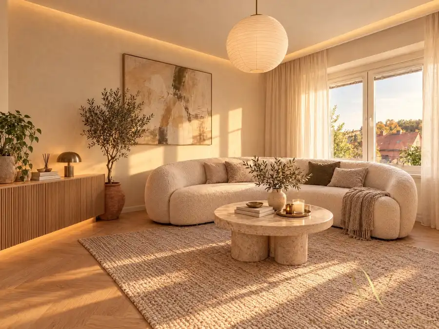
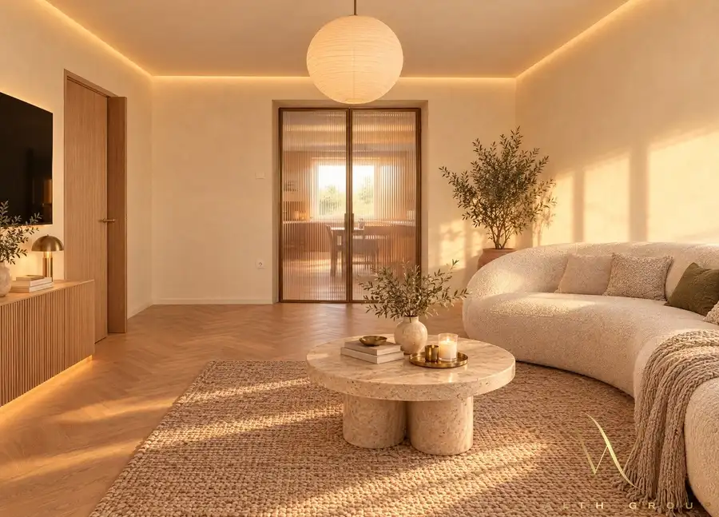
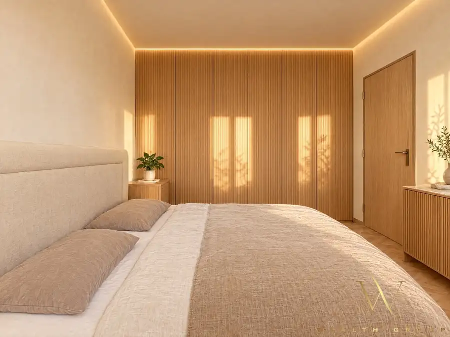
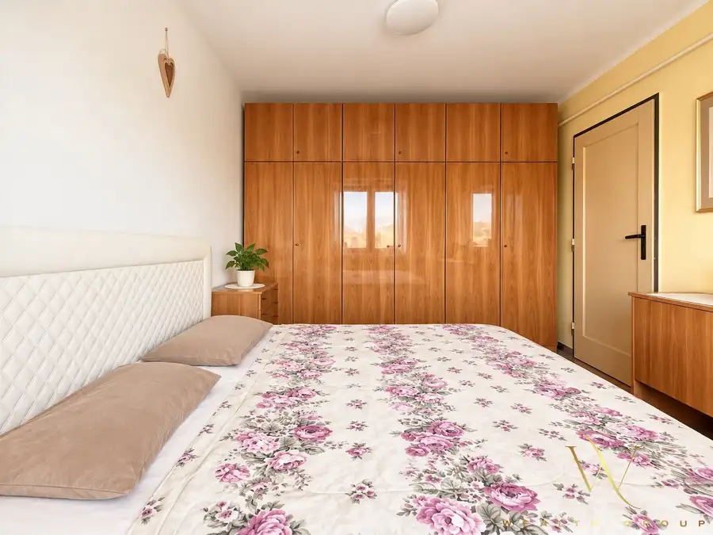
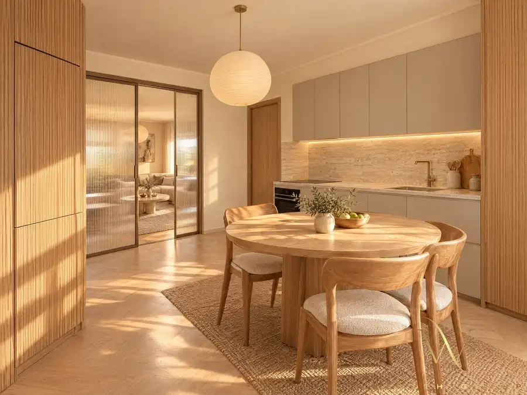
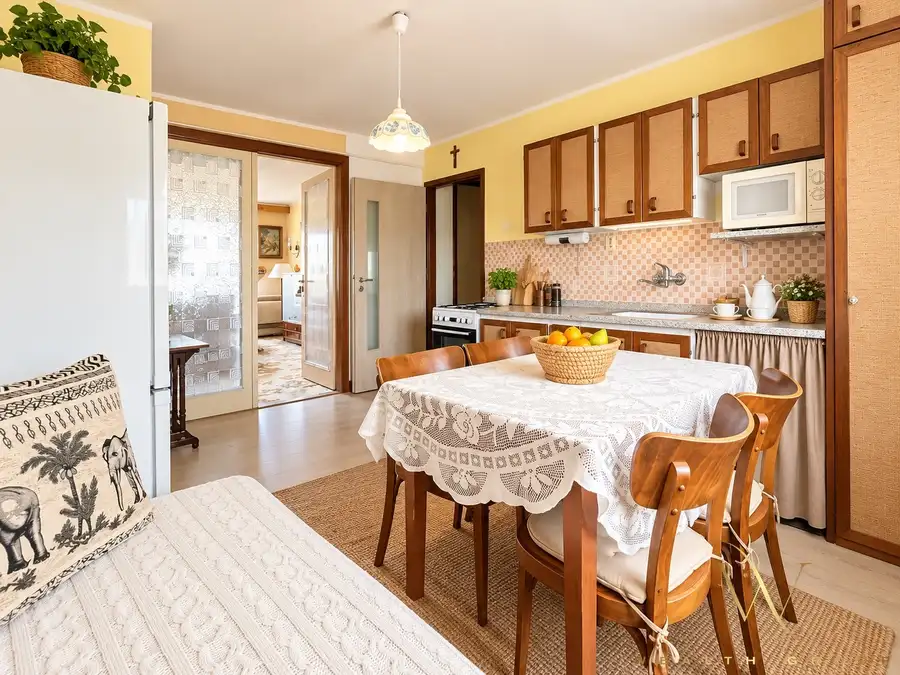

Wealth Group | EXKLUZÍVNE ponúka - 2-izbový tehlový byt ul.Podjavorínskej s výhľadom na Trenčiansky hrad
Trenčín






- Dispozícia2-izbový
- Plocha49.84 m²
- Poschodie1.
- StavČiastočná rekonštrukcia
- VlastníctvoOsobné
O nehnuteľnosti
Wealth Group | ponúka príjemný a polohou veľmi zaujimavý 2-izbový tehlový byt na ulici Podjavorinskej v časti Istebník, len pár minút od historického centra mesta Trenčín. Byt má čístú úžitkovú plochu 49,84m2, nachádza sa na 1.poschodí a patria k nemu dve pivnice s výmerou 5,44m2 a 2,44m2. Celková podlahová plocha vrátane pivnic 58,46m2. Dispozícia bytu pozostáva zo vstupnej chodby, kúpeľne s WC , kuchyne priechodnej do obývacej izby a priestrannej spálne. Práve prepojenie kuchyne s obývacou časťou ponúka veľmi pekný potenciál na dispozičnú zmenu pri rekonštrukcií a vytvorenie modernejšieho, otovreného obytného priestoru s výhľadom na Trenčianský hrad.Bytový dom má 2 vchody a prešiel rekonštrukciou fasády, strechy, vchodových dverí, vstupných a pivničných priestorov.Súčasťou je spoluvlastnícky podiel na pozemku o výmere 904m2. Bonus k bytu je dlhobobé využívanie záhradky, ktorá je za bytovým domom spolu s garážou. Nehnuteľnosť sa nachádza v pokojnej rezidenčnej časti Istebník, obklopenej prevažne rodinnými domami a zeleňou, len pár minút od centa Trenčína. Priamo v tejto časti sa nachádza materská škola, potraviny, MHD. V blízskosti je Lidl, obchody a služby. Ideálne pre mladé rodiny, páry ale aj ako vhodná investícia.Voľný ihneďCena 129 000,- EurPre viac info alebo obhliadku ma neváhajte kontaktovať, maklér: Daniela Dobiašová, +421 908 164 070 daniela.dobiasova@wealthgroup.skV cene sú započítané komplexné právne služby,správne poplatky na katastri a poplatky za overenie podpisov u notára. V prípade záujmu zabezpečime rýchle a nezávislé poradenstvo v oblasti financovania kúpy a získanie najvhodneších podmienok pre hypotekárny úver podľa podmienok kupujúceho. V prípade, že hypotéku nevybavíme rezervačný poplatok Vám vrátime v plnej výške.
Parametre
- Cellar area
- 8.62 m²
- Cena vrátane energií
- Nie
- Druh
- 2 izbový byt
- Dátum zverejnenia
- 29. 09. 2026
- Energie
- 170
- Garage area
- 19 m²
- Podlažie
- 1
- Počet izieb / miestností
- 2
- Počet pivníc
- 2
- Prechodová izba
- Áno
- Rok poslednej rekonštrukcie
- 2015
- Stav nehnuteľnosti
- Čiastočná rekonštrukcia
- Telekomunikácie
- Optická sieť
- Typ
- Predaj
- Typ konštrukcie
- Tehlová
- Vlastníctvo
- Osobné
- Vybavenie
- Garáž, Pivnica, Verejné parkovanie
- Zariadenie
- Čiastočne zariadené
- Úžitková plocha
- 49.84 m²